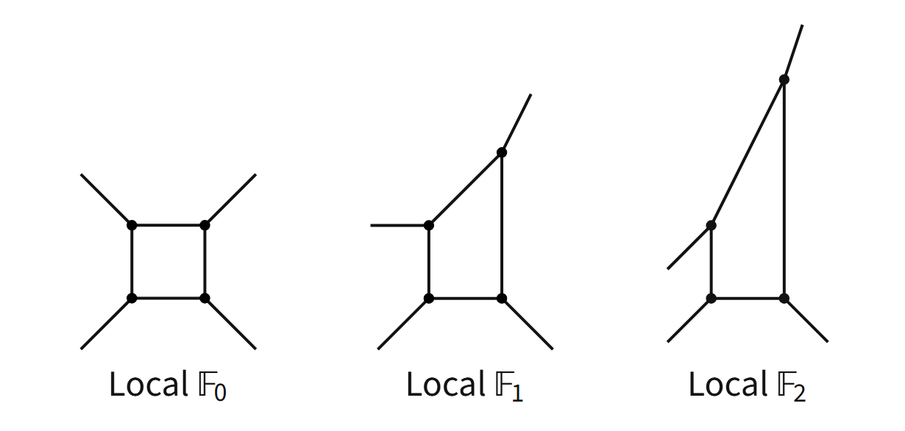

Master's thesis
Topics: Toric Geometry, the Topological Vertex and the TS/ST correspondence
In the summer of 2026 I graduated (cum laude) from the University of Amsterdam with an MSc degree in Theoretical Physics. I am generally interested in mathematical physics and hope to find a PhD position in that area.
In the meantime I intend to study (pure) mathematics subjects for fun and will use this website to keep track of my progress.
View my CV.

Topics: Toric Geometry, the Topological Vertex and the TS/ST correspondence
In addition to the physics curriculum, I have self-studied undergraduate level group theory, topology and elements of fractal geometry before. This time I plan to undertake modular forms and track my progress on this website.